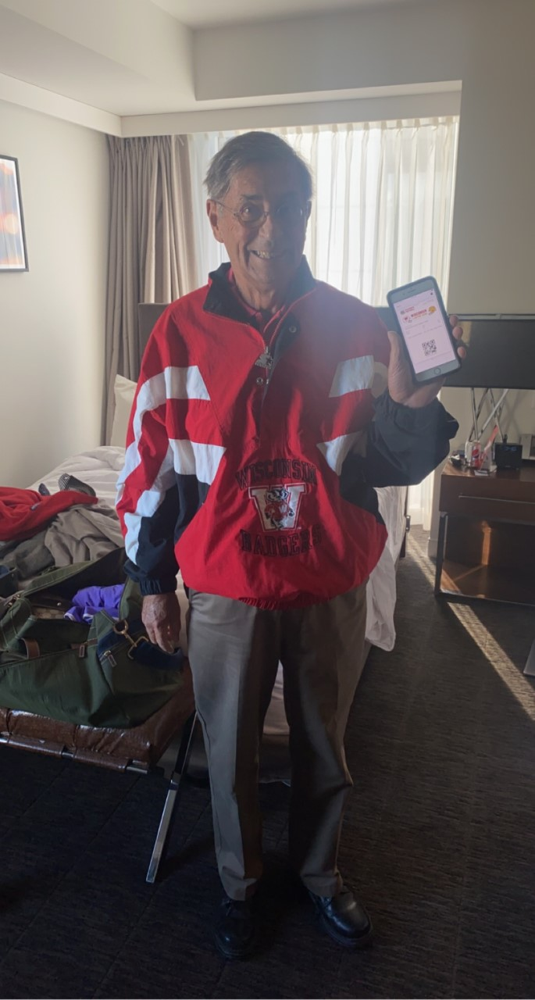
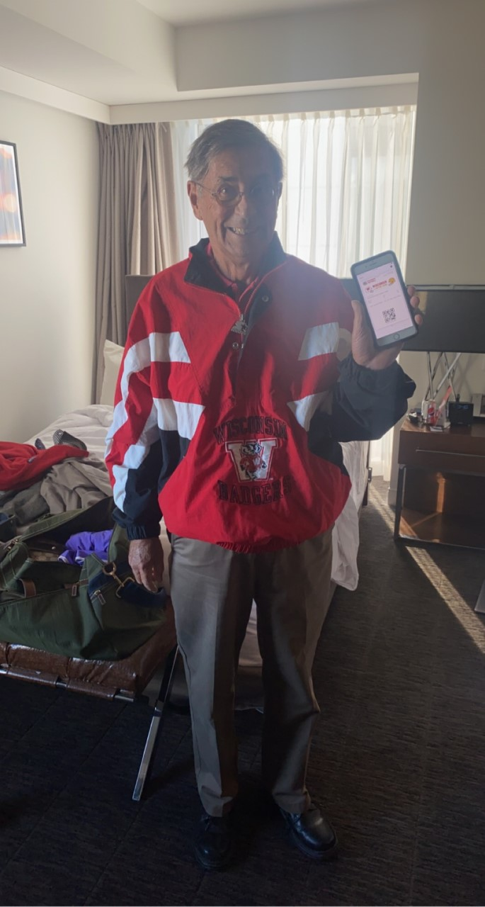

Here are my parents, they are huge Badger fans!
My parents, Robert and Amy Milbourne, met in Milwaukee where I was born and then moved to Columbus when I was two years old. My mom is currently working at The Ohio State University and my dad is currently retired but was a Professor of Economics for 23 years at UW-Madison. They live in a suburb of Columbus called New Albany with my two dogs.